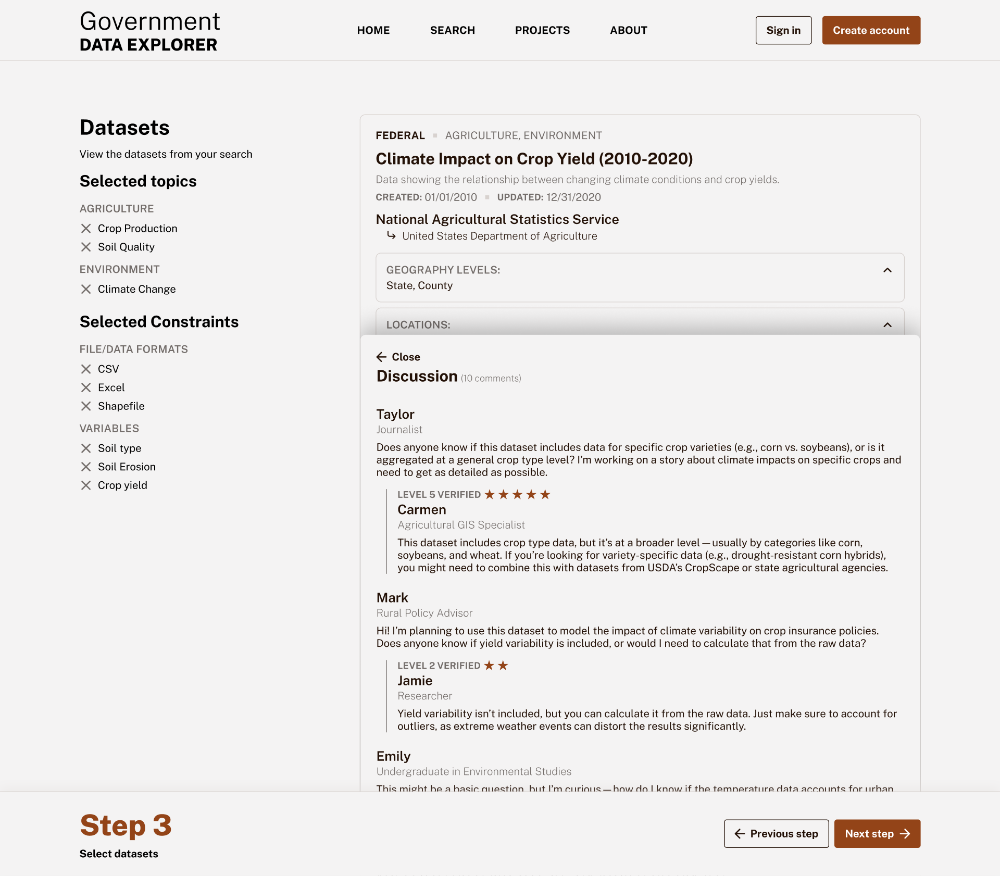
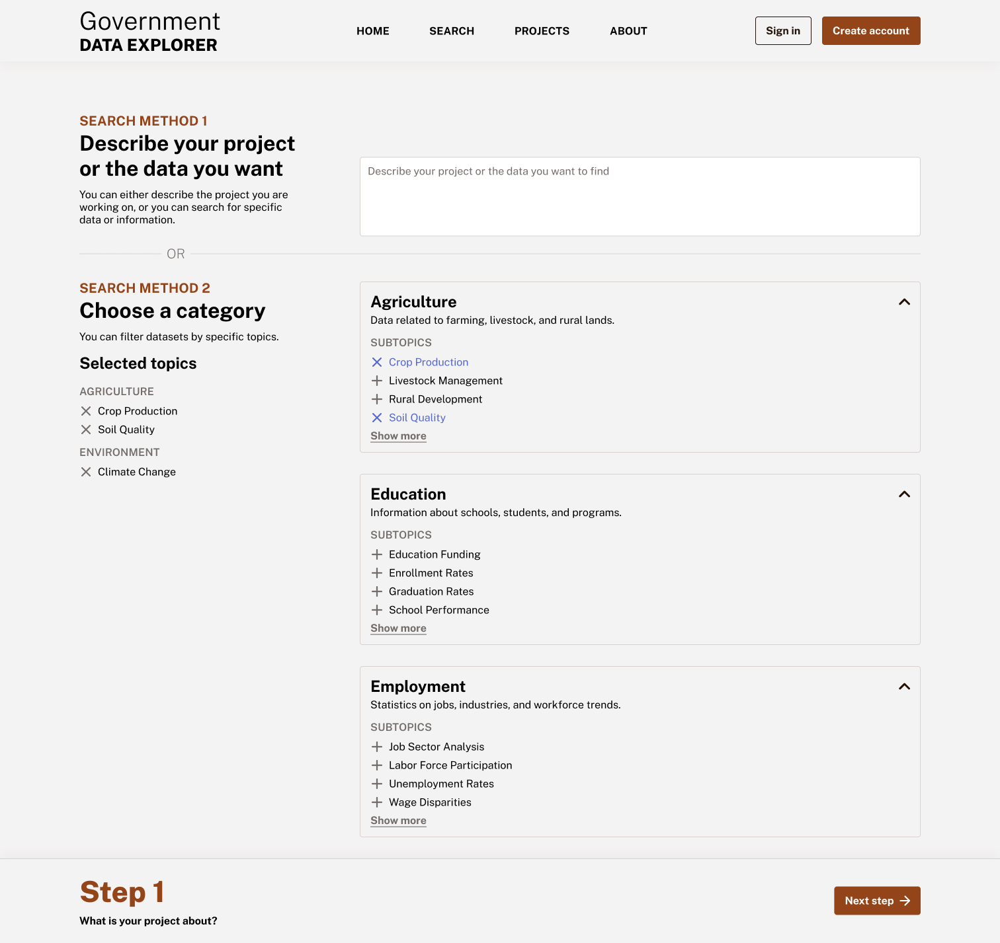
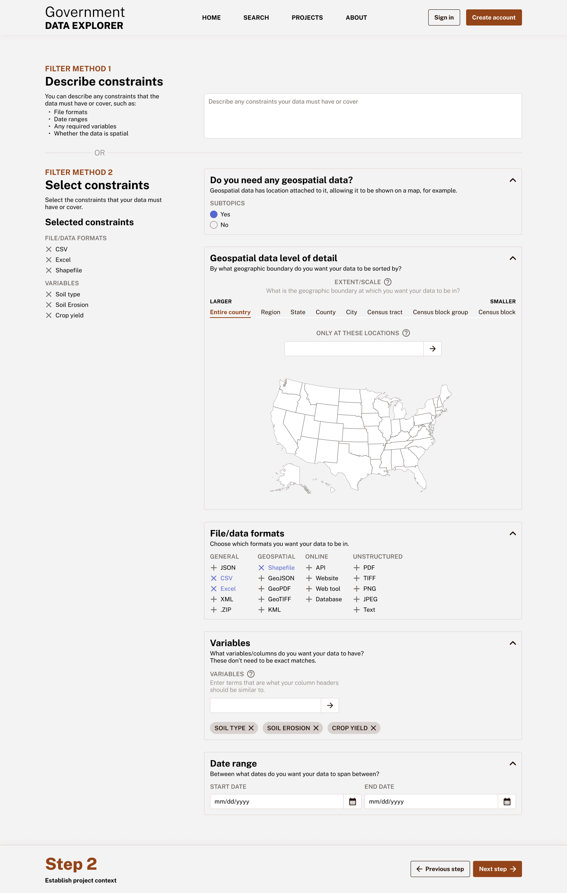
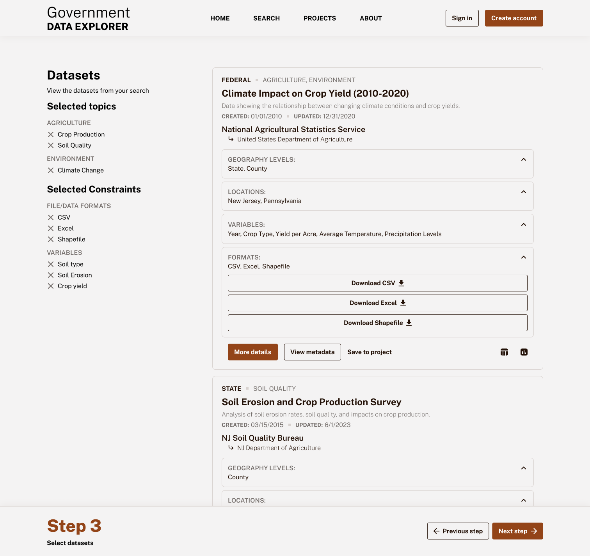

Designing a better way to find government data
As someone who has recently gotten into cartography and data visualization, finding good data can be tough. And while government data is very robust, it can be difficult to find the exact government data you need for a project.
Skip to final designsResearch
The problems newcomers have with government data
I interviewed experts such as librarians and professors — people who often work with newcomers to government data — to understand the problems people face in finding this data.
Knowing who has what data
Finding the government agency that collects specific data isn’t always easy or intuitive, especially for newcomers.
Using data without understanding it
Many people don’t read the metadata, which is essential in understanding what the data does (and doesn’t) show.
Putting data in context takes extra work
The data usually needs to be downloaded and put in other programs so you can combine it with other data sets or visualize it to see if it is what you want.
So, who are these newcomers?
From my discussions with experts, I determined that the main audience who would most need a tool to help find government data would be people who have less experience with this type of data, such as students, journalists, and community advocates.
Further research
The information search process can be discouraging
From library science research, I learned that researchers can get discouraged during the information search process, due in part to relevant data being hard to find.
Congressional inaction shows a gap
I found legislative keywords mandating the federal government work towards implementing open data standards, but also found hardly any mention of these keywords in agency testimony to Congress. This indicated that there could be an opportunity to make government open data easier to find, since the government wasn’t making much progress on it.

Wireframing, prototyping, and testing
Helping users start their search for geospatial data
GIS (Geographic Information system) specialists told me that when looking for geospatial (location-based) data, the first thing they do is outline the type, file format, and level (such as state, county, or city) that the data needs to be in.
My initial design solution
Since geospatial data has unique traits compared to other types of data, I thought that having the geospatial file format filters at the top of the sidebar (away from the general data format filters) would help people start their search.
Confusion during user testing
A librarian who works with newcomers was confused when he looked at the general data formats section and couldn’t find the geospatial formats there. This showed me that I needed to make the geospatial filters more prominent.

Taking a (slight) U-turn
I talked to an immigration data expert who (half-jokingly) said that he thinks a license should be required to use government data. Even though he was kidding, he said that many people use government data without thinking critically about it, leading them to make inaccurate claims and insights.
Just because data is more accessible doesn't mean people will use it correctly. So I revised my goal to not only design a platform to help people find government data, but also to help them use it in the correct way.
Creating a government data community
One way that I thought that people could learn how to use specific data sets would be to create a discussion forum for each dataset. Experts could help newcomers understand the nuances of specifc aspects of the data.

A step-by-step search
In a typical interface where a user can search for data, they are immediately shown the search results and filters together, without much or any explanation about what the different filters mean. Data newcomers might not know where to start, especially in the case of government data since different agencies and levels of government can collect similar (or even the same) kinds of data.
That is why I designed a step-by-step process for searching for data that guides the user in filtering by topic rather than by agency.
Final designs



Lessons learned
Working in a complex domain
As someone who doesn’t have a lot of background knowledge of government data, I quickly got up to speed on the problems and constraints that would come with making a tool like this.
Research comes in many forms
I conducted UX research for this project in some interesting ways, such as searching through Congressional transcripts, analyzing existing interfaces, talking to experts, and reading academic articles to better understand the topic and problems.
More projects
Designing a tool to help students and professionals find government data while maintaining good data practices
Redesigning a student news website with a focus on creating a modular layout

Helping designers learn web development through the process of building their personal portfolio site

Ideating a tool to give people AI-powered financial advice as team leader of an internal hackathon project